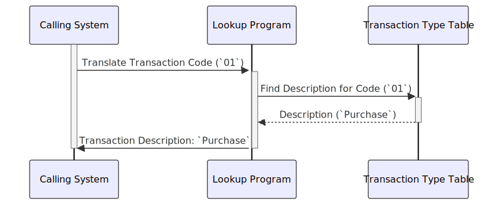

Gerado em: 1º de outubro de 2024
Título do Documento: Pesquisa de Código de Tipo de Transação
Descrição Resumida:
Este documento descreve um programa que traduz códigos numéricos de transação em descrições amigáveis ao usuário. O programa recebe um código de transação como entrada e retorna sua descrição correspondente, melhorando a legibilidade dos dados de transação para vários usuários.
Histórias do Usuário:
Como analista de dados, quero visualizar os dados de transações com descrições claras para que eu possa entender e analisar as informações de forma eficaz.
Épico Relacionado:
4 - Processamento de Transações
Requisitos Técnicos:
- Entrada do Código da Transação:
- O programa recebe um código de transação numérico, normalmente um inteiro, como entrada. Essa entrada pode vir de uma interface de usuário, outro programa ou um arquivo de dados.
- Pesquisa do Código da Transação:
- O programa usa o código de transação de entrada para pesquisar em uma tabela de pesquisa ou estrutura de dados predefinida. Essa tabela mapeia cada código numérico para sua descrição textual correspondente.
- O mecanismo de pesquisa deve ser eficiente. Uma tabela hash ou uma estrutura de dados semelhante pode ser usada para recuperação rápida.
- Saída:
- O programa gera a descrição textual associada ao código de transação de entrada.
- Se o código de entrada não for encontrado na tabela de pesquisa, o programa deverá lidar com isso normalmente retornando uma mensagem “Tipo de Transação Desconhecido” ou acionando uma condição de erro que pode ser tratada adequadamente pelo sistema de chamada.
Modelos Relacionados
Transaction: Uma representação de uma transação financeira.
Code Integer: O código numérico que identifica o tipo de transação.Description String: Uma descrição amigável ao usuário do tipo de transação.
Configurações:
- Tabela de Mapeamento de Tipo de Transação:
- Esta tabela será armazenada no código como um dicionário constante ou pode ser carregada de um arquivo externo.
- Exemplo:
{
"01": "Purchase",
"02": "Payment",
"03": "Credit",
"04": "Authorization",
"05": "Refund",
"06": "Reversal",
"07": "Adjustment"
}
Melhorias de Código:
- Tratamento de Erros: Implemente um tratamento de erros robusto para cenários como formato de entrada inválido (por exemplo, entrada não numérica) ou quando um código de transação não é encontrado na tabela.
- Flexibilidade de Configuração: Permita que a tabela de mapeamento de código de transação seja facilmente atualizada ou estendida sem exigir modificações no código. Isso pode envolver o carregamento do mapeamento de um arquivo externo ou banco de dados.
- Log: Incorpore o log para registrar pesquisas bem-sucedidas e quaisquer erros encontrados. Isso pode ser útil para fins de depuração e auditoria.
Melhorias de Segurança:
- Validação de Entrada: Limpe a entrada do usuário para evitar ataques de injeção, especialmente se o código da transação for recebido de uma fonte externa.
- Controle de Acesso: Se os códigos de transação ou suas descrições forem considerados confidenciais, implemente mecanismos de controle de acesso adequados para restringir quem pode visualizar ou modificar essas informações.
Diagrama Conceitual:

–Made by “Smart Engineering” (by Compass.UOL)–